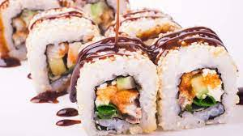

Home
Sushi unagi

Description
Unagi Sushi is a type of Maki sushi (rolled sushi) made by rolling ingredients in nori seaweed sheet and seasoned
rice.
The key ingredient is unagi or freshwater eel, which is known for the bold, rich, naturally sweet flavor, and
soft texture. It`s a popular ingredient in many Japanese dishes.
Ingredients
- Unagi: Traditional unagi sushi contains grilled BBQ unagi (eel), a cooked fish flavored with teriyaki sauce
or unagi sauce. It`s available in the frozen section at local Japanese grocery stores, or you can order
canned unagi online from Amazon.
- Cucumber or Avocado: You can add cucumber strips or avocado slices to your roll. I also added some green
onions for extra flavor.
- Sushi Rice: Use Japanese short-grain rice for the best result.
- Sushi Vinegar: For seasoning the rice and adding more flavor to the dish. If you don`t have sushi vinegar,
you can mix rice vinegar, sugar, and salt as a replacement.
- Nori Seaweed Sheet: Look for seaweed sheets with a black color with a slightly green hue.
- Unagi Sauce: It`s optional, but it`ll take your unagi roll to the next level. Buy it at a Japanese grocery
store, or order it online.
- Sesame Seeds: You can use black, white, or a combination of white and black sesame seeds. I recommend
toasting them in a frying pan for 5 minutes, and it`ll add a wonderful nutty flavor and aroma to your rolls.
Steps
- COOK SUSHI RICE
- PREPARE UNAGI
- MAKE THE UNAGI ROLL